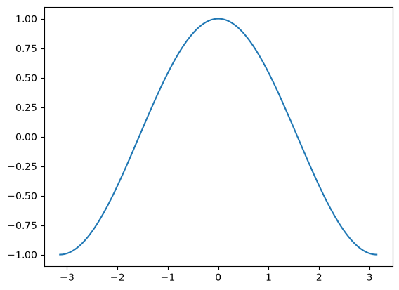
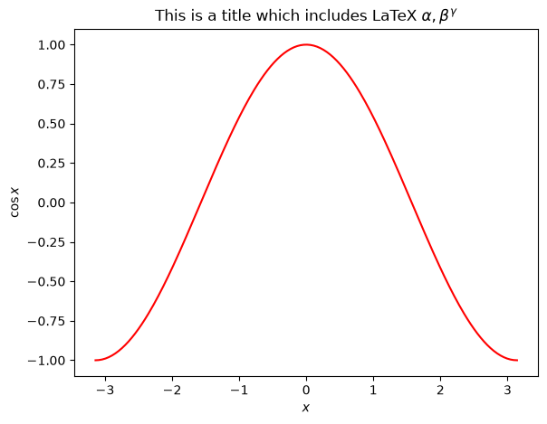
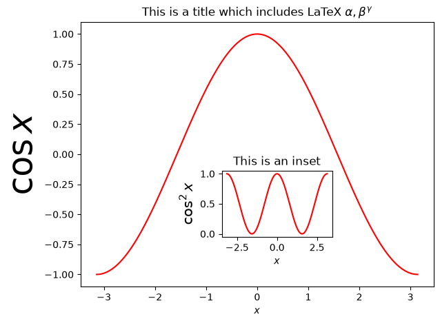
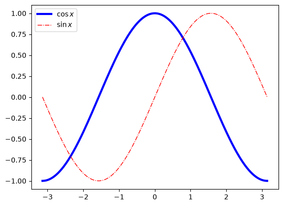
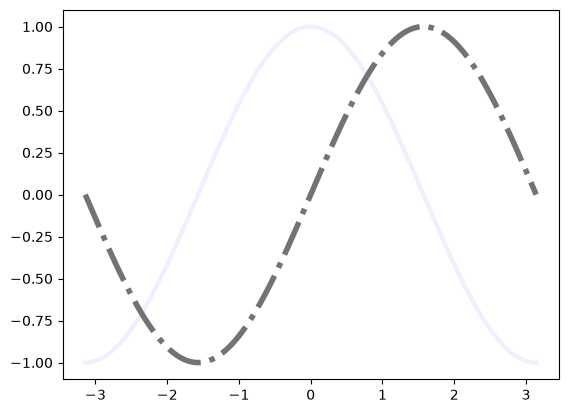
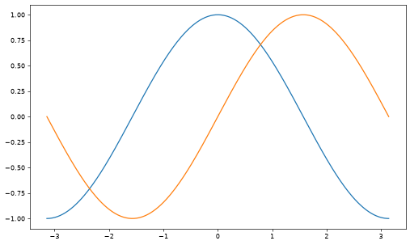
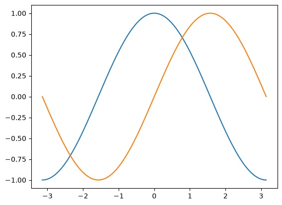
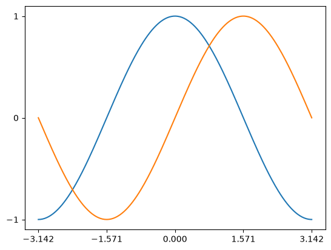
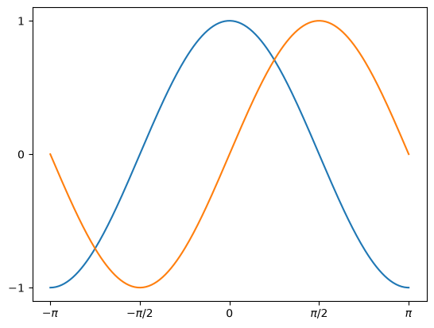

Matplotlib#
Matplotlib is a powerful package (and now de standard) for plotting in both 2D and 3D in Python. In this notebook we will learn the basics on how to plot with matplotlib. (This is based on the Scipy tutorial, and the Introduction to Scientific Computing with Python by Johansson)
NOTE : the pylab mode for ipython is designed to expose the numpy and matplotlib namespace, making easier to use the environment. But, it is recommended to keep the modules names isolated, so we will try to use the pyplot submodule as possible. To use pylab, you can start ipython with the
--pylabflag.
NOTE : We want to produce inline figures inside the notebook. Therefeore, we use the following magic function
%matplotlib inline
A simple example#
Let’s start plotting by using a simple example with the defaults.
import matplotlib.pyplot as plt
import numpy as np
X = np.linspace(-np.pi, np.pi, 256, endpoint=True)
C= np.cos(X)
plt.plot(X, C)
plt.show() # not necessarily needed

help(plt.plot)
Help on function plot in module matplotlib.pyplot:
plot(*args: 'float | ArrayLike | str', scalex: 'bool' = True, scaley: 'bool' = True, data: 'DataParamType' = None, **kwargs) -> 'list[Line2D]'
Plot y versus x as lines and/or markers.
Call signatures::
plot([x], y, [fmt], *, data=None, **kwargs)
plot([x], y, [fmt], [x2], y2, [fmt2], ..., **kwargs)
The coordinates of the points or line nodes are given by *x*, *y*.
The optional parameter *fmt* is a convenient way for defining basic
formatting like color, marker and linestyle. It's a shortcut string
notation described in the *Notes* section below.
>>> plot(x, y) # plot x and y using default line style and color
>>> plot(x, y, 'bo') # plot x and y using blue circle markers
>>> plot(y) # plot y using x as index array 0..N-1
>>> plot(y, 'r+') # ditto, but with red plusses
You can use `.Line2D` properties as keyword arguments for more
control on the appearance. Line properties and *fmt* can be mixed.
The following two calls yield identical results:
>>> plot(x, y, 'go--', linewidth=2, markersize=12)
>>> plot(x, y, color='green', marker='o', linestyle='dashed',
... linewidth=2, markersize=12)
When conflicting with *fmt*, keyword arguments take precedence.
**Plotting labelled data**
There's a convenient way for plotting objects with labelled data (i.e.
data that can be accessed by index ``obj['y']``). Instead of giving
the data in *x* and *y*, you can provide the object in the *data*
parameter and just give the labels for *x* and *y*::
>>> plot('xlabel', 'ylabel', data=obj)
All indexable objects are supported. This could e.g. be a `dict`, a
`pandas.DataFrame` or a structured numpy array.
**Plotting multiple sets of data**
There are various ways to plot multiple sets of data.
- The most straight forward way is just to call `plot` multiple times.
Example:
>>> plot(x1, y1, 'bo')
>>> plot(x2, y2, 'go')
- If *x* and/or *y* are 2D arrays, a separate data set will be drawn
for every column. If both *x* and *y* are 2D, they must have the
same shape. If only one of them is 2D with shape (N, m) the other
must have length N and will be used for every data set m.
Example:
>>> x = [1, 2, 3]
>>> y = np.array([[1, 2], [3, 4], [5, 6]])
>>> plot(x, y)
is equivalent to:
>>> for col in range(y.shape[1]):
... plot(x, y[:, col])
- The third way is to specify multiple sets of *[x]*, *y*, *[fmt]*
groups::
>>> plot(x1, y1, 'g^', x2, y2, 'g-')
In this case, any additional keyword argument applies to all
datasets. Also, this syntax cannot be combined with the *data*
parameter.
By default, each line is assigned a different style specified by a
'style cycle'. The *fmt* and line property parameters are only
necessary if you want explicit deviations from these defaults.
Alternatively, you can also change the style cycle using
:rc:`axes.prop_cycle`.
Parameters
----------
x, y : array-like or float
The horizontal / vertical coordinates of the data points.
*x* values are optional and default to ``range(len(y))``.
Commonly, these parameters are 1D arrays.
They can also be scalars, or two-dimensional (in that case, the
columns represent separate data sets).
These arguments cannot be passed as keywords.
fmt : str, optional
A format string, e.g. 'ro' for red circles. See the *Notes*
section for a full description of the format strings.
Format strings are just an abbreviation for quickly setting
basic line properties. All of these and more can also be
controlled by keyword arguments.
This argument cannot be passed as keyword.
data : indexable object, optional
An object with labelled data. If given, provide the label names to
plot in *x* and *y*.
.. note::
Technically there's a slight ambiguity in calls where the
second label is a valid *fmt*. ``plot('n', 'o', data=obj)``
could be ``plt(x, y)`` or ``plt(y, fmt)``. In such cases,
the former interpretation is chosen, but a warning is issued.
You may suppress the warning by adding an empty format string
``plot('n', 'o', '', data=obj)``.
Returns
-------
list of `.Line2D`
A list of lines representing the plotted data.
Other Parameters
----------------
scalex, scaley : bool, default: True
These parameters determine if the view limits are adapted to the
data limits. The values are passed on to
`~.axes.Axes.autoscale_view`.
**kwargs : `~matplotlib.lines.Line2D` properties, optional
*kwargs* are used to specify properties like a line label (for
auto legends), linewidth, antialiasing, marker face color.
Example::
>>> plot([1, 2, 3], [1, 2, 3], 'go-', label='line 1', linewidth=2)
>>> plot([1, 2, 3], [1, 4, 9], 'rs', label='line 2')
If you specify multiple lines with one plot call, the kwargs apply
to all those lines. In case the label object is iterable, each
element is used as labels for each set of data.
Here is a list of available `.Line2D` properties:
Properties:
agg_filter: a filter function, which takes a (m, n, 3) float array and a dpi value, and returns a (m, n, 3) array and two offsets from the bottom left corner of the image
alpha: float or None
animated: bool
antialiased or aa: bool
clip_box: `~matplotlib.transforms.BboxBase` or None
clip_on: bool
clip_path: Patch or (Path, Transform) or None
color or c: :mpltype:`color`
dash_capstyle: `.CapStyle` or {'butt', 'projecting', 'round'}
dash_joinstyle: `.JoinStyle` or {'miter', 'round', 'bevel'}
dashes: sequence of floats (on/off ink in points) or (None, None)
data: (2, N) array or two 1D arrays
drawstyle or ds: {'default', 'steps', 'steps-pre', 'steps-mid', 'steps-post'}, default: 'default'
figure: `~matplotlib.figure.Figure` or `~matplotlib.figure.SubFigure`
fillstyle: {'full', 'left', 'right', 'bottom', 'top', 'none'}
gapcolor: :mpltype:`color` or None
gid: str
in_layout: bool
label: object
linestyle or ls: {'-', '--', '-.', ':', '', ...} or (offset, on-off-seq)
linewidth or lw: float
marker: marker style string, `~.path.Path` or `~.markers.MarkerStyle`
markeredgecolor or mec: :mpltype:`color`
markeredgewidth or mew: float
markerfacecolor or mfc: :mpltype:`color`
markerfacecoloralt or mfcalt: :mpltype:`color`
markersize or ms: float
markevery: None or int or (int, int) or slice or list[int] or float or (float, float) or list[bool]
mouseover: bool
path_effects: list of `.AbstractPathEffect`
picker: float or callable[[Artist, Event], tuple[bool, dict]]
pickradius: float
rasterized: bool
sketch_params: (scale: float, length: float, randomness: float)
snap: bool or None
solid_capstyle: `.CapStyle` or {'butt', 'projecting', 'round'}
solid_joinstyle: `.JoinStyle` or {'miter', 'round', 'bevel'}
transform: unknown
url: str
visible: bool
xdata: 1D array
ydata: 1D array
zorder: float
See Also
--------
scatter : XY scatter plot with markers of varying size and/or color (
sometimes also called bubble chart).
Notes
-----
.. note::
This is the :ref:`pyplot wrapper <pyplot_interface>` for `.axes.Axes.plot`.
**Format Strings**
A format string consists of a part for color, marker and line::
fmt = '[marker][line][color]'
Each of them is optional. If not provided, the value from the style
cycle is used. Exception: If ``line`` is given, but no ``marker``,
the data will be a line without markers.
Other combinations such as ``[color][marker][line]`` are also
supported, but note that their parsing may be ambiguous.
**Markers**
============= ===============================
character description
============= ===============================
``'.'`` point marker
``','`` pixel marker
``'o'`` circle marker
``'v'`` triangle_down marker
``'^'`` triangle_up marker
``'<'`` triangle_left marker
``'>'`` triangle_right marker
``'1'`` tri_down marker
``'2'`` tri_up marker
``'3'`` tri_left marker
``'4'`` tri_right marker
``'8'`` octagon marker
``'s'`` square marker
``'p'`` pentagon marker
``'P'`` plus (filled) marker
``'*'`` star marker
``'h'`` hexagon1 marker
``'H'`` hexagon2 marker
``'+'`` plus marker
``'x'`` x marker
``'X'`` x (filled) marker
``'D'`` diamond marker
``'d'`` thin_diamond marker
``'|'`` vline marker
``'_'`` hline marker
============= ===============================
**Line Styles**
============= ===============================
character description
============= ===============================
``'-'`` solid line style
``'--'`` dashed line style
``'-.'`` dash-dot line style
``':'`` dotted line style
============= ===============================
Example format strings::
'b' # blue markers with default shape
'or' # red circles
'-g' # green solid line
'--' # dashed line with default color
'^k:' # black triangle_up markers connected by a dotted line
**Colors**
The supported color abbreviations are the single letter codes
============= ===============================
character color
============= ===============================
``'b'`` blue
``'g'`` green
``'r'`` red
``'c'`` cyan
``'m'`` magenta
``'y'`` yellow
``'k'`` black
``'w'`` white
============= ===============================
and the ``'CN'`` colors that index into the default property cycle.
If the color is the only part of the format string, you can
additionally use any `matplotlib.colors` spec, e.g. full names
(``'green'``) or hex strings (``'#008000'``).
# The object oriented way
fig = plt.figure()
axes = fig.add_axes([0.1, 0.1, 0.8, 0.8])
axes.plot(X, C, 'r')
axes.set_xlabel(r'$x$')
axes.set_ylabel(r'$\cos x$')
axes.set_title(r"This is a title which includes LaTeX $\alpha, \beta^\gamma$")
Text(0.5, 1.0, 'This is a title which includes LaTeX $\\alpha, \\beta^\\gamma$')

# The object oriented way
fig = plt.figure()
axes1 = fig.add_axes([0.1, 0.1, 0.8, 0.8])
axes1.plot(X, C, 'r')
axes1.set_xlabel(r'$x$')
axes1.set_ylabel(r'$\cos x$', fontsize=35)
axes1.set_title(r"This is a title which includes LaTeX $\alpha, \beta^\gamma$")
axes2 = fig.add_axes([0.42, 0.25, 0.25, 0.2])
axes2.plot(X, C*C, 'r')
axes2.set_xlabel(r'$x$')
axes2.set_ylabel(r'$\cos^2 x$', fontsize=15)
axes2.set_title(r"This is an inset")
Text(0.5, 1.0, 'This is an inset')

import matplotlib.pyplot as plt
import numpy as np
X = np.linspace(-np.pi, np.pi, 256, endpoint=True)
C, S = np.cos(X), np.sin(X)
plt.plot(X, C)
plt.plot(X, S)
plt.show() # not necessarily needed
As you can see, there are several defaults employed: the type of data plotting (lines), the color (blue and then green), the axis sizes, no labels, no legends, etc. Now let’s start modifying some settings.
Changing colors, widths, and adding legends#
plt.plot(X, C, color='blue', linewidth=3.0, linestyle='-', label=r"$\cos x$") # linewidth -> lw , linestyle -> ls
plt.plot(X, S, color='red', lw=1.0, ls='-.', label=r"$\sin x$")
plt.legend() # there are several codes for different locations. Search on google.
<matplotlib.legend.Legend at 0x7fba05dda2d0>

plt.plot(X, C, color='#eeefff', lw=3.0, ls='-') # html string
plt.plot(X, S, color='0.45', lw=4.0, ls='-.') # gray scale
[<matplotlib.lines.Line2D at 0x7fba05c6d110>]

There are more standard color : red, cyan, magenta, yellow, black, white. Actually, matplotlib can use a full range of html colors and even more! Check Matplotlib colors.
Exercise: Re-plot the previous data with several different colors and palettes. Share your plots with your classmates.
Changing the figure size and resolution#
plt.figure(figsize=(10, 6), dpi=60)
plt.plot(X, C)
plt.plot(X, S)
plt.show()

Saving the figure to a filename#
You can save your plots into filename with suitable formats. It is recommended for you to use the vector graphics formats, like svg, pdf, or pdf, and to avoid bitmap formats. If you must have a bitmap, select the png format with a good dpi.
plt.plot(X, C)
plt.plot(X, S)
plt.savefig("filename.pdf", dpi=200)
Setting limits#
plt.xlim(X.min()*1.1, X.max()*1.1)
plt.ylim(C.min()*1.1, C.max()*1.1)
plt.plot(X, C)
plt.plot(X, S)
[<matplotlib.lines.Line2D at 0x7fba05fb77d0>]

Setting tics#
Let’s change the xtics to show \(\pi\) related values, which are more intereting.
plt.xticks([-np.pi, -np.pi/2, 0, np.pi/2, np.pi])
plt.yticks([-1, 0, 1])
plt.plot(X, C)
plt.plot(X, S)
[<matplotlib.lines.Line2D at 0x7fba05581bd0>]

Setting tics labels#
Instead of -3.142, it woul be better to have the symbol \(\pi\), right?
plt.xticks([-np.pi, -np.pi/2, 0, np.pi/2, np.pi], ['$-\pi$', '$-\pi/2$', 0, '$\pi/2$', '$\pi$'])
plt.yticks([-1, 0, 1])
plt.plot(X, C)
plt.plot(X, S)
[<matplotlib.lines.Line2D at 0x7fba055c4dd0>]

Figures#
A figure, in matplotlib, means the whole window. Therefire, you can have several plots (subplots) on a single figure (window). For this we will need to explicitly use figures and axes, in constrast with the majority of the examples previosuly shown. Remember that the function gca() returns the current axes, while gcf() returns the current figure.
Figures are numbered starting from 1 ! .
Exercise: Please check the documentation explain the following parameters for a figure:
num, figsize, dpi, facecolor, edgecolor, frameon.
You can use plt.close() to close a figure programatically.
Subplots#
Subplots are a way to organize several plots on a figure, using a grid. You have to specify the rows and columns. For more complex grids, you can use the gridspec command.
from IPython.core.display import Image
Image(filename='subplots.png')
---------------------------------------------------------------------------
FileNotFoundError Traceback (most recent call last)
Cell In[14], line 2
1 from IPython.core.display import Image
----> 2 Image(filename='subplots.png')
FileNotFoundError: [Errno 2] No such file or directory: 'subplots.png'
Manipulating several plots#
x = np.linspace(0, 5)
fig, axes = plt.subplots(1, 3, figsize=(12, 4))
axes[0].plot(x, x**2, x, x**3)
axes[0].set_title("default axes ranges")
axes[1].plot(x, x**2, x, x**3)
axes[1].axis("tight")
axes[1].set_title("tight axes")
axes[2].plot(x, x**2, x, x**3)
axes[2].set_ylim([0, 60])
axes[2].set_xlim([2, 5])
axes[2].set_title("custom axes range");
Logarithmic scale#
fig, axes = plt.subplots(1, 2, figsize=(10,4))
axes[0].plot(x, x**2, x, np.exp(x))
axes[0].set_title("Normal scale")
axes[1].plot(x, x**2, x, np.exp(x))
axes[1].set_yscale("log")
axes[1].set_title("Logarithmic scale (y)");
Other plotting styles#
n = np.array([0,1,2,3,4,5])
xx = np.linspace(-0.75, 1., 100)
fig, axes = plt.subplots(1, 4, figsize=(12,3))
axes[0].scatter(xx, xx + 0.25*np.random.randn(len(xx)))
axes[0].set_title("scatter")
axes[1].step(n, n**2, lw=2)
axes[1].set_title("step")
axes[2].bar(n, n**2, align="center", width=0.5, alpha=0.5)
axes[2].set_title("bar")
axes[3].fill_between(x, x**2, x**3, color="green", alpha=0.5);
axes[3].set_title("fill_between");
# polar plot using add_axes and polar projection
fig = plt.figure()
ax = fig.add_axes([0.0, 0.0, .6, .6], polar=True)
t = np.linspace(0, 2 * np.pi, 100)
ax.plot(t, t, color="blue", lw=3);
3D figures#
alpha = 0.7
phi_ext = 2 * np.pi * 0.5
def flux_qubit_potential(phi_m, phi_p):
return 2 + alpha - 2 * np.cos(phi_p)*np.cos(phi_m) - alpha * np.cos(phi_ext - 2*phi_p)
phi_m = np.linspace(0, 2*np.pi, 100)
phi_p = np.linspace(0, 2*np.pi, 100)
X,Y = np.meshgrid(phi_p, phi_m)
Z = flux_qubit_potential(X, Y).T
from mpl_toolkits.mplot3d.axes3d import Axes3D
fig = plt.figure(figsize=(14,6))
# ‘ax‘ is a 3D-aware axis instance because of the projection=’3d’ keyword argument to add_subplot
ax = fig.add_subplot(1, 2, 1, projection='3d')
p = ax.plot_surface(X, Y, Z, rstride=4, cstride=4, linewidth=0)
# surface_plot with color grading and color bar
ax = fig.add_subplot(1, 2, 2, projection='3d')
p = ax.plot_surface(X, Y, Z, rstride=1, cstride=1, cmap=plt.cm.coolwarm, linewidth=0, antialiased=False)
cb = fig.colorbar(p, shrink=0.5)
fig = plt.figure(figsize=(8,6))
ax = fig.add_subplot(1,1,1, projection='3d')
ax.plot_surface(X, Y, Z, rstride=4, cstride=4, alpha=0.25)
cset = ax.contour(X, Y, Z, zdir='z', offset=-np.pi, cmap=plt.cm.coolwarm)
cset = ax.contour(X, Y, Z, zdir='x', offset=-np.pi, cmap=plt.cm.coolwarm)
cset = ax.contour(X, Y, Z, zdir='y', offset=3*np.pi, cmap=plt.cm.coolwarm)
ax.set_xlim3d(-np.pi, 2*np.pi);
ax.set_ylim3d(0, 3*np.pi);
ax.set_zlim3d(-np.pi, 2*np.pi);
Animations#
To create animations, you can use the FuncAnimation function which can generate a movie of files from sequences of figures. You have to define an init function, which starts the animation sequence, and an update function, which updates the canvas. The general structure is
def init():
# setup figure
def update(frame_counter):
# update figure for new frame
anim = animation.FuncAnimation(fig, update, init_func=init, frames=200, blit=True)
anim.save("animation.mp4", fps=30) # fps = frames per second
from matplotlib import animation
from numpy import pi, sin, cos
# double pendulum
from scipy.integrate import odeint
g = 9.82; L = 0.5; m = 0.1
def dx(x, t):
x1, x2, x3, x4 = x[0], x[1], x[2], x[3]
dx1 = 6.0/(m*L**2) * (2 * x3 - 3 * cos(x1-x2) * x4)/(16 - 9 * cos(x1-x2)**2)
dx2 = 6.0/(m*L**2) * (8 * x4 - 3 * cos(x1-x2) * x3)/(16 - 9 * cos(x1-x2)**2)
dx3 = -0.5 * m * L**2 * ( dx1 * dx2 * sin(x1-x2) + 3 * (g/L) * sin(x1))
dx4 = -0.5 * m * L**2 * (-dx1 * dx2 * sin(x1-x2) + (g/L) * sin(x2))
return [dx1, dx2, dx3, dx4]
x0 = [np.pi/2, np.pi/2, 0, 0] # initial state
t = np.linspace(0, 10, 250) # time coordinates
x = odeint(dx, x0, t) # solve the ODE
fig, ax = plt.subplots(figsize=(5,5))
ax.set_ylim([-1.5, 0.5])
ax.set_xlim([1, -1])
pendulum1, = ax.plot([], [], color="red", lw=2)
pendulum2, = ax.plot([], [], color="blue", lw=2)
def init():
pendulum1.set_data([], [])
pendulum2.set_data([], [])
def update(n):
# n = frame counter
# calculate the positions of the pendulums
x1 = + L * sin(x[n, 0])
y1 = - L * cos(x[n, 0])
x2 = x1 + L * sin(x[n, 1])
y2 = y1 - L * cos(x[n, 1])
# update the line data
pendulum1.set_data([0 ,x1], [0 ,y1])
pendulum2.set_data([x1,x2], [y1,y2])
anim = animation.FuncAnimation(fig, update, init_func=init, frames=len(t), blit=True)
# anim.save can be called in a few different ways, some which might or might not work
# on different platforms and with different versions of matplotlib and video encoders #anim.save(’animation.mp4’, fps=20, extra_args=[’-vcodec’, ’libx264’], writer=animation.FFMpegWriter()) #anim.save(’animation.mp4’, fps=20, extra_args=[’-vcodec’, ’libx264’])
#anim.save("animation.mp4", fps=20, writer="ffmpeg", codec="libx264")
#anim.save("animation.mp4", fps=20, writer="avconv", codec="libx264")
anim.save("animation.mp4", fps=20)
plt.close(fig)
Exercises#
By using the codes below and by reading the documentation, try to reproduce the associated figure.
Regular plot#
Hint : Check the command fill_between
Image("ex-01-regular.png")
n = 256
X = np.linspace(-np.pi, np.pi, n, endpoint=True)
Y = np.sin(2 * X)
plt.plot(X, Y + 1, color='blue', alpha=1.00)
plt.plot(X, Y - 1, color='blue', alpha=1.00)
plt.fill_between(X, 1.0, Y+1, color='blue', alpha=0.45)
plt.fill_between(X, -1.0, Y-1, Y-1>-1, color='blue', alpha=0.45)
plt.fill_between(X, -1.0, Y-1, Y-1<-1, color='red', alpha=0.45)
Scatter Plot#
Hint: Color is given by angle of (X, Y). Take care of marker size, color, and transparency.
Image('ex-02-scatter.png')
n = 1024
X = np.random.normal(0,1,n)
Y = np.random.normal(0,1,n)
T = np.arctan2(Y, X)
plt.scatter(X,Y, c = T, cmap='hot')
Bar plots#
Take care of text alingment. Add text for red bars.
Image("ex-03-bars.png")
n = 12
X = np.arange(n)
Y1 = (1 - X / float(n)) * np.random.uniform(0.5, 1.0, n)
Y2 = (1 - X / float(n)) * np.random.uniform(0.5, 1.0, n)
plt.bar(X, +Y1, facecolor='#9999ff', edgecolor='white')
plt.bar(X, -Y2, facecolor='#ff9999', edgecolor='white')
for x, y in zip(X, Y1):
plt.text(x + 0.4, y + 0.05, '%.2f' % y, ha='center', va='bottom')
plt.ylim(-1.25, +1.25)
Contour plots#
Use the clabel command. You need to check the appropiate colormap.
Image("ex-04-contour.png")
def f(x, y):
return (1 - x / 2 + x ** 5 + y ** 3) * np.exp(-x ** 2 -y ** 2)
n = 256
x = np.linspace(-3, 3, n)
y = np.linspace(-3, 3, n)
X, Y = np.meshgrid(x, y)
plt.contourf(X, Y, f(X, Y), 8, alpha=.75, cmap='jet')
C = plt.contour(X, Y, f(X, Y), 8, colors='black', linewidth=.5)
imshow#
You need to take care of the origin of the image in the imshow command and use te appropriate colorbar
Image("ex-05-imshow.png")
def f(x, y):
return (1 - x / 2 + x ** 5 + y ** 3) * np.exp(-x ** 2 - y ** 2)
n = 10
x = np.linspace(-3, 3, 4 * n)
y = np.linspace(-3, 3, 3 * n)
X, Y = np.meshgrid(x, y)
plt.imshow(f(X, Y))
Pie chart#
Hint: Modify Z.
Take care of colors and slices.
Image("ex-06-pie.png")
Z = np.random.uniform(0, 1, 20)
plt.pie(Z)
Quiver#
Hint: You need to draw arrows twice
Take care of colors an orientations.
Image("ex-07-quiver.png")
n=8
X, Y = np.mgrid[0:n, 0:n]
plt.quiver(X, Y)
Grids#
Take care of linestyles
Image("ex-08-grid.png")
axes = plt.gca()
axes.set_xlim(0, 4)
axes.set_ylim(0, 3)
axes.set_xticklabels([])
axes.set_yticklabels([])
Multiplots#
Hint: You can use several subplots with different partitions
Image("ex-09-multiplots.png")
plt.subplot(2, 2, 1)
plt.subplot(2, 2, 3)
plt.subplot(2, 2, 4)
Polar plots#
Hint: You only need to modify the axes line.
Image("ex-10-polar.png")
plt.axes([0, 0, 1, 1])
N = 20
theta = np.arange(0., 2 * np.pi, 2 * np.pi / N)
radii = 10 * np.random.rand(N)
width = np.pi / 4 * np.random.rand(N)
bars = plt.bar(theta, radii, width=width, bottom=0.0)
for r, bar in zip(radii, bars):
bar.set_facecolor(cm.jet(r / 10.))
bar.set_alpha(0.5)
3D Plots#
Hint : You need to use contourf
Image("ex-11-3d.png")
from mpl_toolkits.mplot3d import Axes3D
fig = plt.figure()
ax = Axes3D(fig)
X = np.arange(-4, 4, 0.25)
Y = np.arange(-4, 4, 0.25)
X, Y = np.meshgrid(X, Y)
R = np.sqrt(X**2 + Y**2)
Z = np.sin(R)
ax.plot_surface(X, Y, Z, rstride=1, cstride=1, cmap='hot')
Making an animation#
There are several ways to make an animation. One can, for example, print several copies of the figure at different times and then enconde them in a video. Or make just a live animation in the notebook, without storing it. Let’s do the later REF:
import matplotlib.pyplot as plt
import numpy as np
%matplotlib inline
# First set up the figure, the axis, and the plot element we want to animate
fig = plt.figure()
ax = plt.axes(xlim=(0, 2), ylim=(-2, 2))
line, = ax.plot([], [], lw=2)
# initialization function: plot the background of each frame
def init():
line.set_data([], [])
return line,
# animation function. This is called sequentially
x = np.linspace(0, 2, 1000)
def animate(i):
y = np.sin(2 * np.pi * (x - 0.01 * i))
line.set_data(x, y)
return line,
from matplotlib import animation
# call the animator. blit=True means only re-draw the parts that have changed.
anim = animation.FuncAnimation(fig, animate, init_func=init,
frames=200, interval=20, blit=True)
anim.save('basic_animation.mp4', fps=30)
import numpy as np
import matplotlib.pyplot as plt
import matplotlib.animation as animation
def data_gen():
t = data_gen.t
cnt = 0
while cnt < 1000:
cnt+=1
t += 0.05
yield t, np.sin(2*np.pi*t) * np.exp(-t/10.)
data_gen.t = 0
fig, ax = plt.subplots()
line, = ax.plot([], [], lw=2)
ax.set_ylim(-1.1, 1.1)
ax.set_xlim(0, 5)
ax.grid()
xdata, ydata = [], []
def run(data):
# update the data
t,y = data
xdata.append(t)
ydata.append(y)
xmin, xmax = ax.get_xlim()
if t >= xmax:
ax.set_xlim(xmin, 2*xmax)
ax.figure.canvas.draw()
line.set_data(xdata, ydata)
return line,
ani = animation.FuncAnimation(fig, run, data_gen, blit=True, interval=10,
repeat=False)
plt.show()